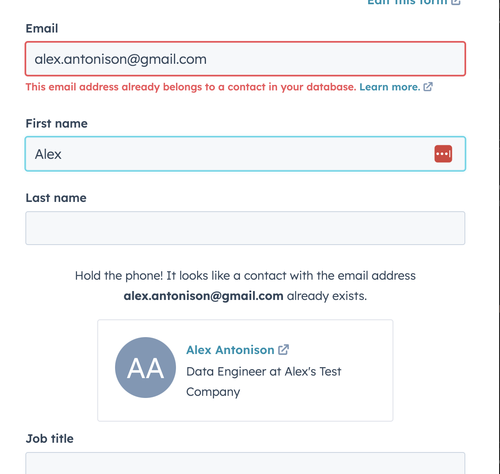

The Problem
When I initially posted to LinkedIn that I was looking for my next job opportunity, I was a bit overwhelmed with the amount of responses I received. I feel very fortunate to have an amazing network of colleagues that reached out to see how they could help. However, I quickly realized I needed to start tracking conversations, recommended companies and job applications. My first idea was to spin up a Google Sheet that included a Contacts, Companies, Job Applications, and Activities tab.
As I started to fill this out, I quickly identified a handful of issues:
- This was going to be very manual
- Typos would be the end of me
- I would have to use something like Google Data Studio to combine information across tabs
A More Automated Approach
As I was looking at how I had organized my Job Hunting Google Sheet, I realized this looked very familiar with how I have worked with data out of CRM’s like Salesforce and HubSpot. After some quick googling, I found this blog post by HubSpot How to Organize Your Job Hunt in HubSpot CRM and it inspired me give it a shot.
Getting HubSpot setup for Job Hunting
Setting up Companies
The first thing I did was to go into HubSpot and customized the entry forms and table views for Companies and Contacts to line up with the kind of information I wanted to capture. One of the first parts of HubSpot I really liked was when adding a company, all I had to do was input the companies website and HubSpot would automatically pull in information about the company such as industry, employee size, etc. Once I had a company added, I could go in and add people to that company to establish a relationship between people I was talking with and the companies they worked at.
One more involved adjustment I wanted to make was to give myself a way of specifying a Type of company. By default, HubSpot Company.Type was tailored more towards sales but fortunately, you can go into their data model and customize various elements. You can accomplish this by going to Profile & Preferences > Data Management > Objects > Companies. From there, I changed Type to be Startup, Consulting, Recruitment, Company, and University.
Setting up Contacts
For Contacts, I took the approach of keeping it as simple as possible so I cut down the input form quite a bit. While they had a field for Twitter, HubSpot did not include one for LinkedIn. I thought it would be helpful to look at people’s LinkedIn’s prior to a call or in person meeting, so I co-opted the Website URL field to be used for people’s LinkedIn URL.
One feature that has been helpful for me is a built-in data quality feature for HubSpot where it will call out if you have already added someone with their e-mail as a contact.

Setting up Job Applications (aka Deals)
With all of my companies and contacts added, I then set up Deals as Job Applications. For this, I went into the Profile & Preferences > Data Management > Objects > Deals and changed the Pipelines to map to the different parts of the application process.
With that setup, I then tailored down the Deal submit form to be short so it would be quick add Job Applications. Also, I can tie those job applications to people and/or companies. In the Deal Description section, I put the Job’s URL so I can quickly bring up the information about the job.
Since I can connect both a Company and Contacts to a Deal, in my Deal’s view I can see what job applications where I have had recently activity with the target company. I also included an “Amount” column that will be populated in the event I receive an offer from a company.
Using HubSpot
Now that I have Companies, Contacts, and Job Applications set up, my workflow for using HubSpot involves logging e-mails, calls, and meetings with a Contact.
When you log anything, there is an option at the bottom to set up a “Follow up task” with either a default or custom follow up date. I have to say this is easily one of my favorite features since it streamlines setting up reminders to follow up.
Other Interesting Features
After it only took a few hours to get Companies, Contacts, and Job Applications setup, I decided to explore some other features of HubSpot’s free tier that could be helpful in automating other aspects of my job hunt.
Free Meeting Scheduler
If you are open to connecting your Google e-mail to your HubSpot platform, HubSpot has a free meeting scheduler that can connect directly with your Google Calendar to streamline people scheduling time with you.
Sending E-mails from HubSpot
To help connect e-mail conversations with people you are networking with to potential job opportunities, you can use HubSpot to send one-on-one e-mails to a contact.
Feel free to reach out
I hope other people can find HubSpot to be as helpful as I have in their job hunt! If you have any questions or betters ideas on how I could improve this, please feel free to reach out!